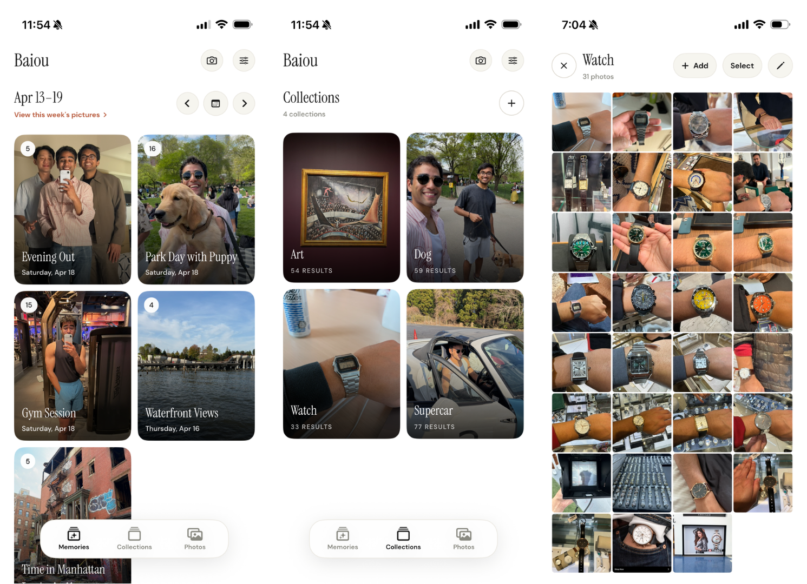

We're in the singularity. Intelligence is now a utility.
Taste becomes the differentiator. Knowing what feels right, what should exist, what is actually beautiful.
Steve Jobs is THE example of how powerful personal taste can be. Apple is Steve externalized. His taste, scaled.
I built Baiou to help you identify your taste.
Your camera roll is thousands of tiny decisions. Each photo is a moment that builds who you are. Places you've been, outfits you noticed, objects you liked, meals, books, art, friends, weeks of your life. That's your taste. And it sits there. Unorganized.
Baiou organizes your weeks into memories. Tracks the artifacts you want to remember. A simple way to watch your taste evolve.
Software is dead. The products that survive will be made by the artists who inspire.
Try it out! See what you've already collected.
You'll need your own Gemini API key to create the weekly memory groups. The multimodal understanding of Gemini 3.1 Flash-Lite Preview is pretty good so the free tier will suffice!
TestFlight: https://testflight.apple.com/join/wNSpBKaJ
